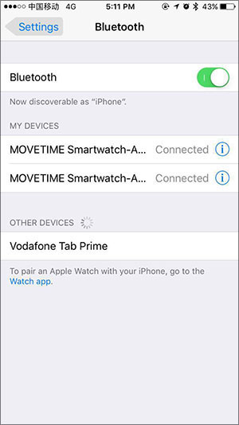

Wifi 手錶常見問題解答
當我的手錶無法接聽通話和電話時我可以做什麼？
- 確保您的 WATCH 和裝置之間的連線是正常的。
- 確保您的 WATCH 與您的裝置相隔不太遠。
- 輕觸
手錶控制中心將它開啟，之後輕觸您手機的系統 BT 配對頁面的配對進行連線。
對於 Android 裝置，確認之後在您的裝置上有一個藍牙圖標
，之後您可以撥打和接聽電話。
對於 Android 裝置，如果 BLE 和 HFP（針對 BT 通話）都準備就緒，則有兩個相同的 BT ID 連線手機系統配對頁面。


您的 MOVETIME 智慧手錶不可被監測。
- 如果不啟用則打開藍牙。
- 啟用藍牙服務搜尋裝置。
- 如果開啟了藍牙但藍牙沒有開始工作，請重啟您的智慧手錶或手機。
- 如果您的智慧手錶與其他手機配對，重設您的智慧手錶或斷開WATCH與MOVETIME應用程式的配對並重設手機藍牙系統介面。
如何從您的心率眾獲取最精確的結果？
要獲取最精確的結果，請圍繞手腕系緊 WATCH。即便在理想條件下，WATCH 可能無法獲取每個人的可靠心率讀數。對於小部分比率的使用者，不同因素可能導致其無法獲取心率讀數。不同的因素可以幫助 WATCH 獲取最穩定且最佳的心率讀數：
- WATCH 背面需要接觸皮膚：
- WATCH 需要圍繞手腕系緊，但需要為皮膚呼吸保持一些空間並讓傳感器運行。
- 當您運動時系緊 WATCH ，完成鍛煉後鬆開。
- 只有當您在手腕上部戴上 WATCH 時傳感器才能運行。
如果您的 WATCH 未正確放置，或者您的心率無法測量，將手環系緊一點。您的 WATCH 必須戴緊並保持舒適。

當我的 WATCH 無法響應時我可以做什麼？
按住電源鍵持續 8 秒重啟 WATCH。這僅限緊急情況。
為什麼我的 WATCH 有時會意外地震動？
- 檢查您是收到通知。
- 確保您的 WATCH 與您的裝置相隔不太遠。
當我的震動無法工作時我可以做什麼？
- 充電並確保電池有電。
- 確保您的 WATCH 和裝置連線未斷開
當我的 WATCH 無法充電時我可以做什麼？
- 確保充電底座的金屬點與您 WATCH 後背的金屬點對齊。
- 確保您的 USB 線緊密插入 USB 接口。
- 有時，如果您的 WATCH 電池完全沒電，需要一些時間激活電池和系統。
在安裝 MOVETIME 應用程式並將 WATCH 連線我的裝置之後，為什麼電池消耗會增長？
這是正常現象，電耗情況包括：
- 讓您的 WATCH 和裝置保持連線。
- 在您的 WATCH 和手機之間傳送檔案。
- 斷開連線，裝置掃描和重新連線。
最多能有多少 BT 4.0 低能耗（BLE）裝置可以連線裝置？
只有 1 款 BLE 裝置可以同時連線裝置。
當我的 WATCH 經常與我的裝置斷開連線時我怎麼做？
- 確保 MOVETIME 應用程式不會被系統工具中斷。如果它被中斷，重啟應用程式。
- 確保您的 WATCH 和裝置之間的通訊是正常的。
a) 在手機上檢查 MOVETIME 應用程式。如果您的 WATCH 連線您的裝置，您可以在右上角看到一個圖標。如果 WATCH 無法連線，
將變更至圖標中間的
。
b) 如果您在您的 WATCH 上發現藍牙圖標，它意味著您的 WATCH 無法與您的裝置配對

如何將我的 WATCH 恢復出廠設定？
- 如果以上答案未能幫助解決您的問題，請重新設定您的 WATCH。
- 在 MOVETIME 應用程式中。輕觸
之後 Watch > 設定 > 恢復出廠設定並重設您的 WATCH.
- 長按開關機鍵 10 秒重設您的 WATCH。
如果我的 WATCH 無法接收通知我能做什麼？
確保您的 WATCH 從 MOVETIME 接收通知，遵循以下步驟。
- 前往 MOVETIME 應用程式 > Watch > 通知，啟用來自特定應用程式中您所需要的通知。
- 一旦手機開機，啟用 MOVETIME 應用程式自動開啟。
- 將 MOVETIME 應用程式添加至白名單或受保護應用程式清單。
- 當熒幕鎖定時，關閉任何禁用應用程式的節省電池設定。
- 前往設定 > 通知 > 通知存取 > MOVETIME（存取可能根據品牌不同而不同）。禁用 MOVETIME 通知，之後再次啟用。
- 重啟您的智慧手機。
如何監控睡眠？
當您睡眠時戴上 WATCH，並確保 WATCH 有足夠電量保持開機。
如果在我的 WATCH 上有 Wi-Fi 認證問題，我可以做什麼？
長按彈出界面並忽略當前 Wi-Fi，並再次輕觸 WI-FI 並在您的手機上輸入正確代碼。